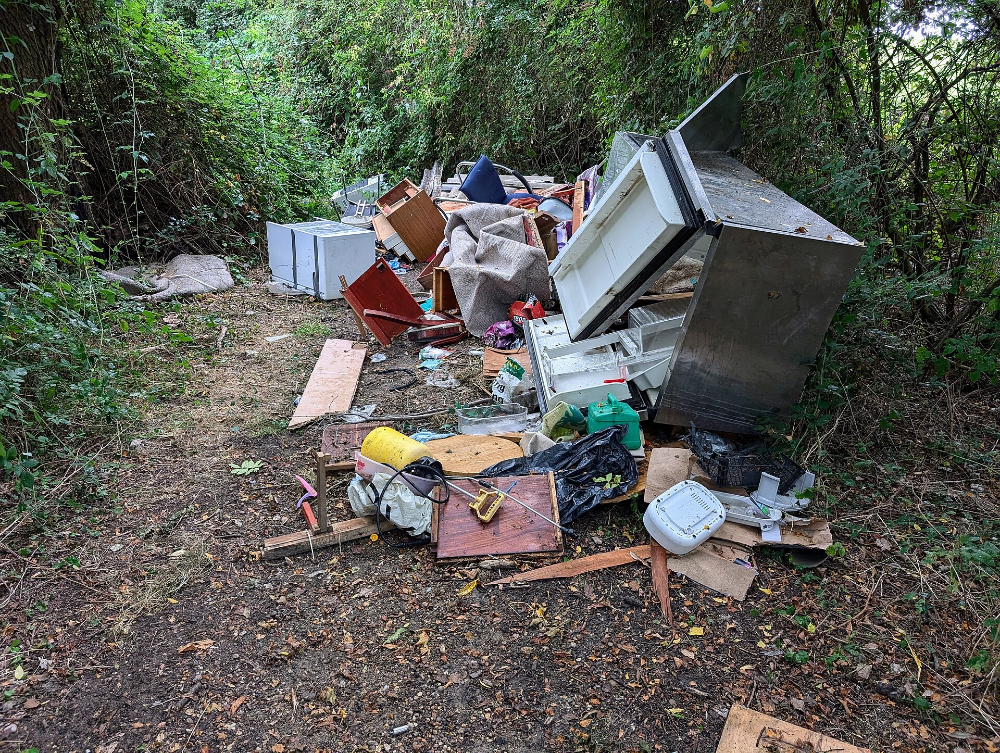

Затворена котловина
Долината е заобиколена от планини. При зимни температурни инверсии студеният въздух остава долу и „заключва“ дима над града.
Казанлъшка долина · Екологична инициатива
Между Балкана и Средна гора лежи една затворена „купа“. Всичко, което изгаряме, изхвърляме и запалваме, остава вътре – при нас.
Виж проблема🌬️ Движи мишката или пръста над мъглата – ти си вятърът. Скролни надолу: колкото повече знаеш и действаш, толкова по-чист става въздухът.
Проблем №1
Всяка зима над града се събира сив похлупак. Причината не е само в това, какво горим, а и в това къде живеем.
Долината е заобиколена от планини. При зимни температурни инверсии студеният въздух остава долу и „заключва“ дима над града.
Изгарянето на твърди горива в домовете е сред основните източници на фини прахови частици в региона, заедно с транспорта.
Източник: РИОСВ – Стара Загора
Фините прахови частици (ФПЧ2.5) са толкова малки, че проникват дълбоко в белите дробове и в кръвта. Най-уязвими са децата и възрастните.
През 2017 г. Съдът на ЕС осъди България по дело на Европейската комисия, защото страната не се справя с мръсния въздух. Решението започва от всеки град.
Източник: „Капитал“


Как става
Скролни бавно – рисунката показва какво става с въздуха над Казанлък за едно денонощие.
1 · Денем
Слънцето затопля земята, а тя – въздуха до нея. Топлият въздух е по-лек, издига се и отнася дима нагоре, където вятърът го разнася.
2 · Вечер и нощем
Земята изстива бързо. Студеният въздух е по-тежък – той се стича по склоновете на Балкана и Средна гора и се събира на дъното на котловината, точно над града.
3 · Сутрин
Над студения пласт остава по-топъл въздух. Той е като капак: димът от комините се издига, удря се в него и остава долу. Това е температурната инверсия. В тихите зимни дни без вятър капакът не се отваря с часове.

При температурна инверсия студеният въздух остава долу в котловината, а с него и димът от комините.
Картата
Стара планина на север, Средна гора на юг, а помежду им – Казанлък. Натисни точка на картата, за да научиш повече.
Град
Градът е на дъното на котловината между двете планини. Зиме студеният въздух остава долу и димът от комините се събира над него.
Схема – разстоянията са приблизителни.
Интерактивно
Промени навиците на града и виж как се променя въздухът.
* Опростена симулация с образователна цел, а не реални измервания.
Още заплахи

0 дка
Толкова храсти и гори обхвана пожарът между Казанлък и Мъглиж през август 2023 г., заради който бе обявено частично бедствено положение. Повечето пожари започват от човешка небрежност: хвърлен фас, палене на стърнища, искра.
500 дка са колкото 70 футболни игрища (105 × 68 м всяко).

Строителни отпадъци, гуми, пластмаса
В РИОСВ – Стара Загора редовно постъпват сигнали за незаконно изхвърлени отпадъци около Казанлък. Когато такова сметище се запали, димът отново остава в долината.
Промишлеността
Фините прахови частици идват основно от три места: отоплението с твърдо гориво, промишлеността и транспорта. Затова освен за комините на къщите трябва да говорим и за заводите.
Източник: Европейска агенция за околна среда, 2024
Заводът за плочи от дървесина на „Кастамону България“ АД е в с. Горно Сахране, община Павел баня (ул. „Шипченска епопея“ 24) – в западната част на долината. Сайт на фирмата
РИОСВ одобрява доклада за ОВОС за разширяване на завода с нова инсталация за формалин. Десетки жители протестират пред завода и обжалват решението. БТА
Кметът на Казанлък и местен бизнес осигуряват три станции за измерване на въздуха – при Голямо Дряново, язовир „Копринка“ и в общината. Община Казанлък
РИОСВ определя изводите в сигнал на сдружение „България за чиста Розова долина“ за формалдехид като „неверни и заблуждаващи“. БТА
След нов сигнал РИОСВ проверява завода: филтърът работи, а емисиите са в нормите. Данните от станциите извън националната система инспекцията не приема за надеждни. Фокус
Жителите се тревожат, а фирмата и РИОСВ казват, че нормите се спазват. Точно затова въздухът трябва да се измерва надеждно и открито – тогава спорът се решава с данни. Снимки от протестите и от завода има в статиите в източниците.
Дим, миризма или изхвърлени отпадъци? Обади се на „Зеления телефон“ на РИОСВ – Стара Загора.
Изпълнителната агенция по околна среда публикува всеки ден бюлетин за качеството на въздуха в страната.
Преди нов завод или разширение има оценка на въздействието върху околната среда (ОВОС). Решението може да се обжалва – както направиха жителите през 2023 г.
РИОСВ приема само данни от станции в националната система. Повече такива станции в долината значат надеждни данни за всички.
Затова и решението е тук – започва от това къде изхвърляме една бутилка или една батерия.
Мини игра
Хвани падащите отпадъци и ги пусни в правилния контейнер, преди да паднат на земята. Имаш 60 секунди, а отпадъците падат все по-бързо.
Точки: 0
Време: 60 с
Рекорд: 0
Управление: влачи отпадъка с мишката или с пръст и го пусни върху контейнер. Можеш и само да натиснеш контейнер – в него отива най-ниският отпадък. С клавиатура: ← и → избират контейнер, Enter или ↓ пуска най-ниския отпадък.
Галерия
Розите, язовирът, планините – ето заради какво си струва да пазим въздуха чист. Плъзни лентата и натисни снимка, за да я видиш в пълен размер.
Твоят ход
Отбележи нещата, които обещаваш да правиш – с всяко обещание долината разцъфва.
0 от 5 обещания